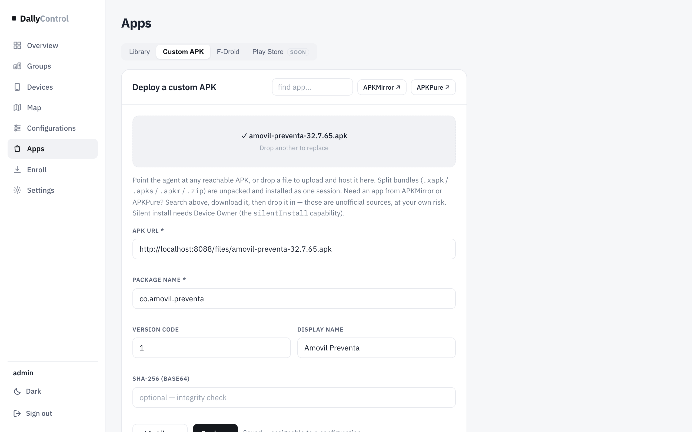
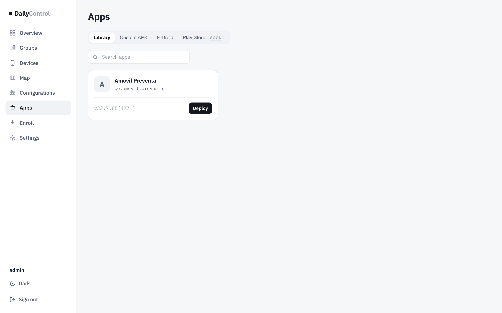
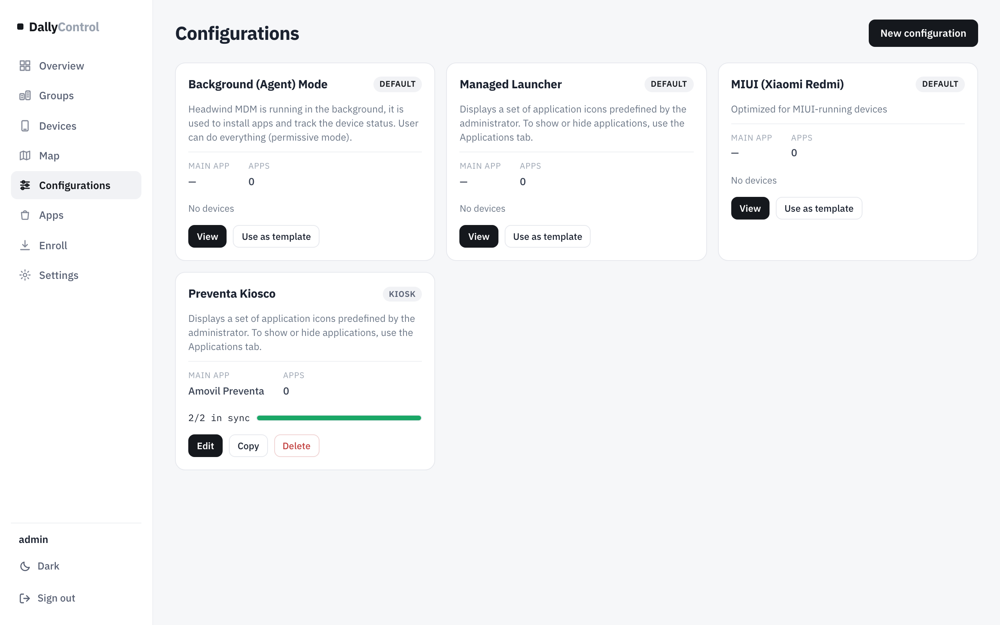
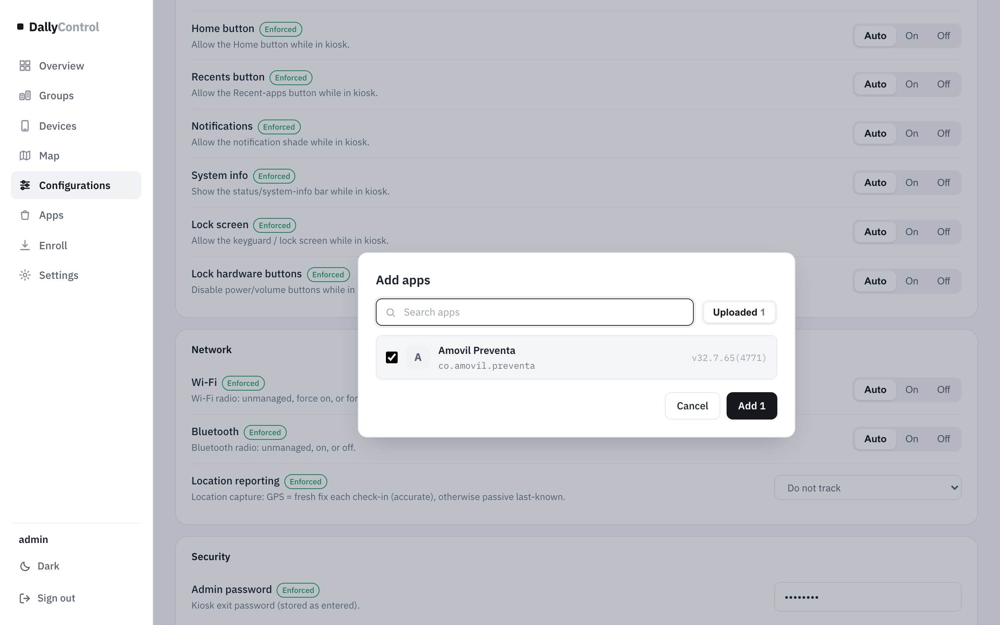
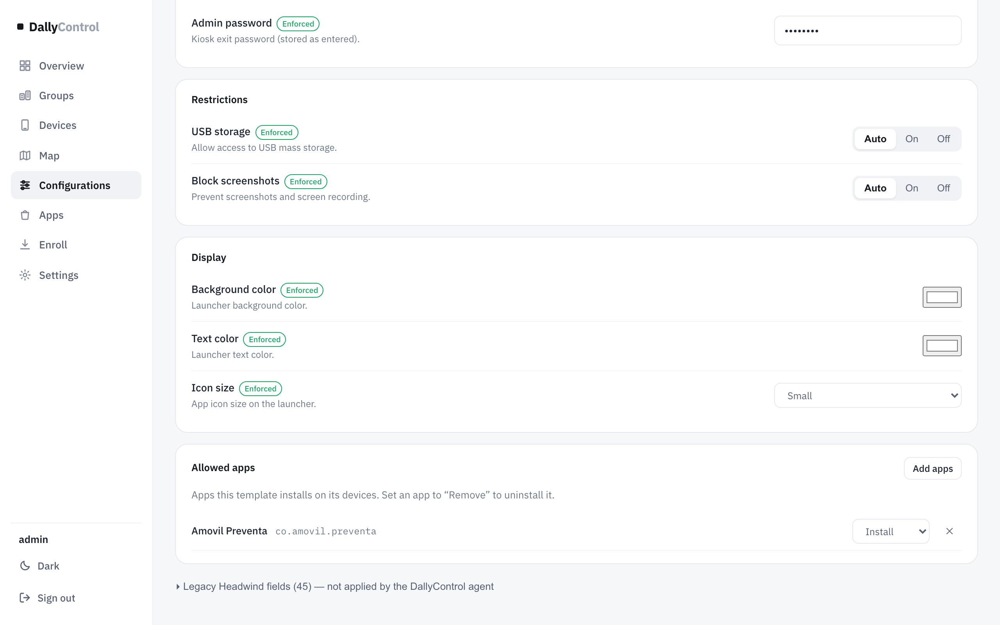
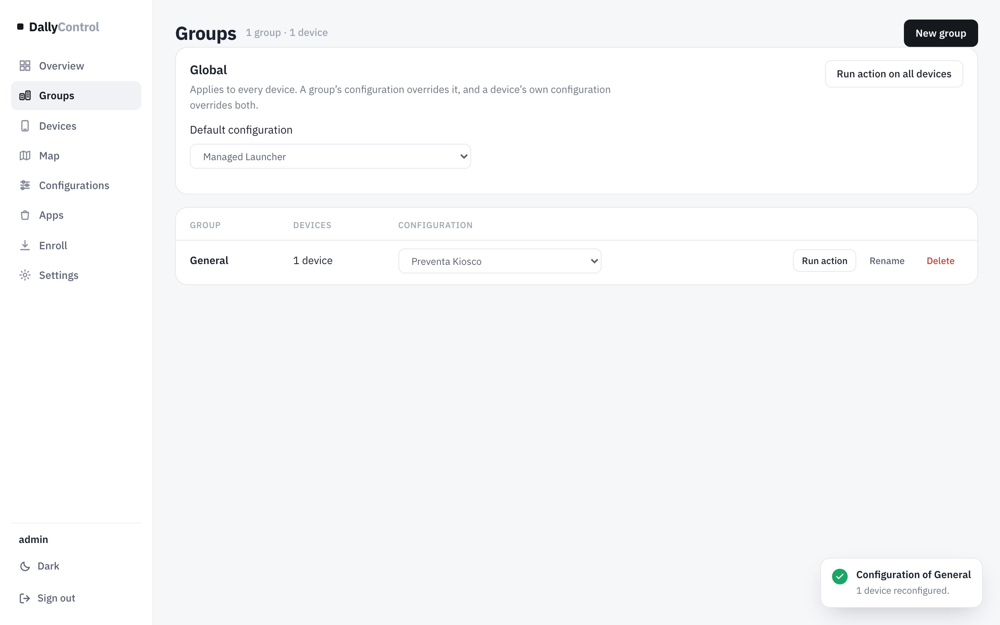
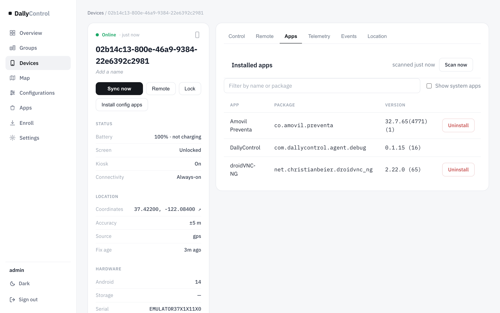
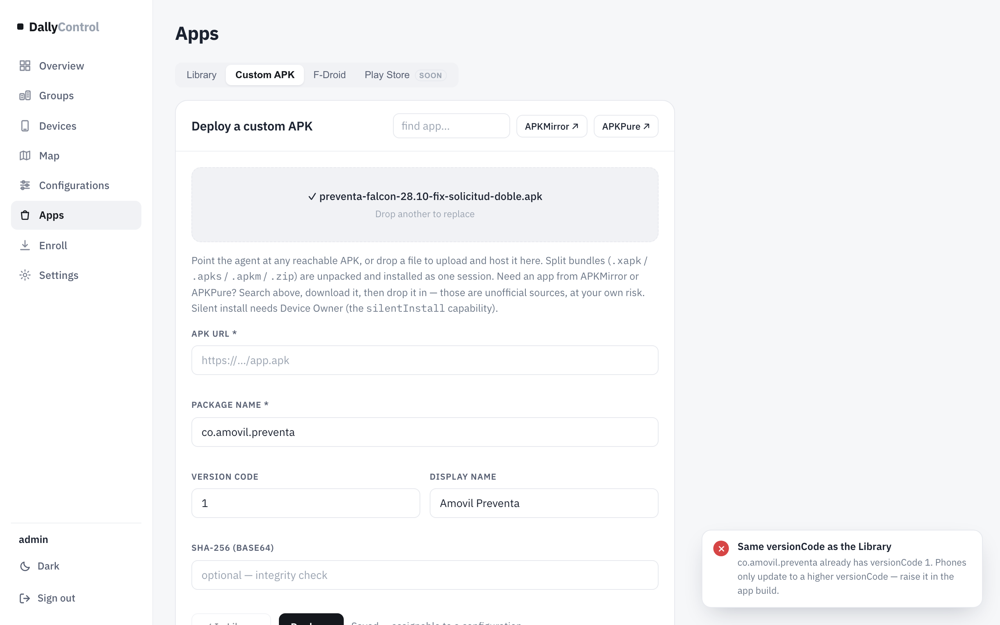
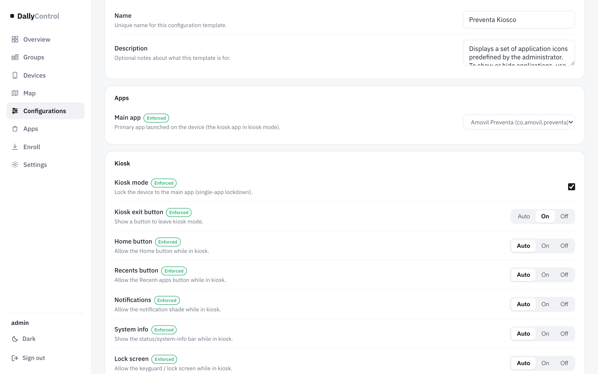

Cómo subir vuestras APK, cómo llegan solas a los teléfonos, cómo se actualizan y cómo dejar un teléfono bloqueado en la app de preventa.
Ejemplo real: Amovil Preventa 32.7.65Instalación silenciosaProbado en emuladores Android 14 y 15
Contenido
Cómo funciona
Subir una APK
Añadirla a una configuración
Cómo se instala en el teléfono
Actualizar una app
Modo kiosco
Quitar una app
Problemas frecuentes
DallyControl · consola web y agente Android · septiembre 2026
01 Cómo funciona
Las apps no se mandan teléfono por teléfono: se ponen en una configuración, y cada teléfono instala lo que dice la suya.
AppsBibliotecaSubes la APK una vez; queda alojada en el servidor.
→
ConfigurationsConfiguraciónDice qué apps instalar, cuál es la principal y si hay kiosco.
→
Groups / DevicesGrupo o teléfonoUsa esa configuración (propia, del grupo o global).
→
TeléfonoSe instala solaDescarga, verifica e instala sin preguntar.
La instalación es silenciosa: el usuario no ve ningún aviso ni tiene que aceptar nada. Esto funciona porque el agente es el propietario del dispositivo (ver la guía de enrolamiento).
En esta guíaSe usó la APK real preventa-falcon-28.10-fix-solicitud-doble.apk (Amovil Preventa, paquete co.amovil.preventa, versión 32.7.65). Se subió, se instaló en un teléfono y se dejó en kiosco; todas las capturas son de ese recorrido.
02 Subir una APK
Apps → Custom APKEn el menú de la izquierda.
Arrastra la APK al recuadroO haz clic para buscarla. También acepta paquetes divididos (.xapk, .apks, .apkm, .zip).
ListoLa consola lee el paquete, la versión y el nombre, aloja el archivo en el servidor y la añade a la biblioteca. No hay que rellenar nada.
/apps · Custom APK

APK subida. La consola rellenó sola el paquete (co.amovil.preventa), el versionCode y el nombre, y alojó el archivo.
/apps · Library

Library. Las apps disponibles para las configuraciones.
03 Añadirla a una configuración
Las tres configuraciones de fábrica (Managed Launcher, MIUI, Background) son plantillas bloqueadas: se usan como base, no se editan.
Configurations → «Use as template»Sobre la plantilla que más se parezca (Managed Launcher para teléfonos de ruta). Ponle nombre; en el ejemplo, Preventa Kiosco.
Edit → Allowed apps → Add appsMarca la app y pulsa Add. Queda con la acción Install.
Apps → Main appElige la app principal: la que se abre al encender y la que queda fija en kiosco.
SaveSi cambias el kiosco, la consola avisa de que los teléfonos de esa configuración lo aplicarán; confirma.
/configs

Configurations. Las plantillas «Default» y la configuración propia «Preventa Kiosco».
/configs · Add apps

Add apps. Se elige la app de la biblioteca.
/configs · Allowed apps

Allowed apps. Cada app con su acción: Install (instalar), Remove (desinstalar de los teléfonos) o Hide icon (no se instala ni se muestra).
Asignar la configuración
Una configuración no hace nada hasta que un grupo o un teléfono la usa:
A toda una empresa: Groups → en la fila del grupo, columna Configuration. Es lo habitual.
A todos los teléfonos sin grupo ni configuración propia: Groups → Global → Default configuration.
A un teléfono concreto: su ficha → «Set on device».
/groups

Groups. «Preventa Kiosco» asignada al grupo General: su teléfono se reconfiguró en el momento.
04 Cómo se instala en el teléfono
No hay que ir teléfono por teléfono. La instalación se pone en marcha sola en estos casos:
Cuando…
Qué pasa
Guardas una configuración con apps
Todas sus apps se ponen en cola para cada teléfono que la usa.
Un teléfono pasa a otra configuración (cambia de grupo, cambia la del grupo o la global, o le fijas una)
Recibe las apps de su nueva configuración.
Se enrola un teléfono nuevo
Instala las apps de su configuración nada más enrolarse.
Subes una versión nueva de una app
Las configuraciones que la usan pasan a la versión nueva y sus teléfonos se actualizan (sección 5).
En el teléfono
Recibe la ordenAl instante si está encendido o en Always-on; en unos minutos si está bloqueado en modo ahorro.
Compara versiones antes de descargarSi ya tiene esa versión, no descarga nada.
Descarga, verifica e instalaEn silencio, sin avisos al usuario. En el ejemplo, los 39 MB de Amovil Preventa tardaron segundos en una red rápida.
Informa a la consolaLa orden aparece como app.install · DONE en «Recent commands» de la ficha.
/devices/… · Apps

Ficha → Apps. Apps instaladas en el teléfono (Scan now las vuelve a leer): Amovil Preventa ya aparece.
Forzarlo a manoEn la ficha del teléfono, Install config apps vuelve a enviar todas las apps de su configuración. Para una app suelta en muchos teléfonos: Devices (o Groups) → Actions / Run action → Install app…
05 Actualizar una app
Sube la APK nueva por Custom APK, igual que la primera vez. Si su versionCode es mayor, la consola la añade como versión nueva de la misma app, todas las configuraciones que la usan pasan a ella y los teléfonos se actualizan solos.
Importante para Amovil Preventa: el versionCodeAndroid y el agente deciden si actualizar por el versionCode (un número entero), no por el nombre de la versión. La APK de esta guía tiene versionCode 1 aunque su versión sea 32.7.65. Si la próxima APK también tiene versionCode 1, ningún teléfono se actualizará. En cada compilación nueva de la app hay que subir el versionCode (1, 2, 3… o, por ejemplo, 3276504771).
Al subir una APK de una app que ya está
Resultado
versionCode mayor
«New version added»: configuraciones y teléfonos pasan a la versión nueva. probado: un teléfono pasó de la versión 1 a la 2 solo
versionCode igual
«Same versionCode as the Library»: no cambia nada; hay que subir el versionCode en la compilación.
versionCode menor
«Older than the Library»: Android nunca instala una versión anterior sobre una más nueva.
/apps · Custom APK

Mismo versionCode. Al volver a subir la misma APK de preventa, la consola avisa de que los teléfonos no se actualizarían.
06 Modo kiosco
El kiosco deja el teléfono dedicado a vuestra app: el usuario no puede salir a otras apps, a Ajustes ni a la pantalla de inicio.
Cómo activarlo
En la configuraciónMain app = la app (Amovil Preventa) y Kiosk mode activado. Guardar.
AsignarlaAl grupo o al teléfono. Los teléfonos entran en kiosco en segundos.
Comprobado en el emulador
Con el kiosco activo, pulsar Inicio, Recientes o intentar abrir Ajustes deja el teléfono en Amovil Preventa. La consola muestra «Kiosk: On» en la ficha.
Dos modos
Una sola app (solo la Main app con Install): el teléfono queda fijo en esa app.
Lanzador (varias apps con Install): una pantalla de DallyControl muestra solo los iconos permitidos.
Kiosco activo. Amovil Preventa fija en pantalla.
/configs · Preventa Kiosco

Editor de configuración. Main app y opciones del kiosco. Las marcadas «Enforced» las aplica el agente.
Opciones del kiosco
Opción
Qué hace
Kiosk mode
Activa el bloqueo en la app principal (o en el lanzador).
Home / Recents button
Permite o no los botones de Inicio y Recientes dentro del kiosco.
Notifications
Permite o no desplegar las notificaciones.
System info
Muestra o no la barra de estado (hora, batería, señal).
Lock screen
Permite o no la pantalla de bloqueo.
Lock hardware buttons
Bloquea los botones físicos de encendido y volumen.
Kiosk exit button + Admin password
En modo lanzador: botón visible para salir (o 7 toques en la esquina superior derecha si está apagado), protegido con la contraseña de administrador.
Entrar y salir desde la consola
Sin tocar la configuración, en la ficha del teléfono → Control → Disruptive: Enter kiosk (elige apps de las instaladas) y Exit kiosk. Es la forma de sacar a un teléfono del kiosco un momento para soporte; para quitarlo de forma permanente, desactiva Kiosk mode en su configuración.
Soporte remoto en kioscoLa pestaña Remote funciona con el teléfono en kiosco: se ve la pantalla y se puede operar dentro de la app (comprobado tocando un campo de Amovil Preventa desde el visor). Al terminar, el teléfono sigue en kiosco.
07 Quitar una app
De todos los teléfonos de una configuración: en Allowed apps, cambia su acción a Remove y guarda. Se desinstala de todos sus teléfonos.
De un teléfono concreto: su ficha → Apps → Uninstall.
Dejar de instalarla sin desinstalarla: quítala de la configuración (✕).
De la biblioteca: primero quítala de todas las configuraciones.
El agente no se puede desinstalar a sí mismoUna configuración nunca desinstala el agente de DallyControl, aunque se lo pida.
08 Problemas frecuentes
Síntoma
Causa probable
Qué hacer
La app no llega a un teléfono
El teléfono no usa esa configuración
Mira en su ficha «Group & configuration» qué configuración ejecuta.
Tarda minutos en instalar
Teléfono bloqueado en modo ahorro
Ponlo en Always-on si necesita cambios inmediatos.
La versión nueva no se instala
Mismo versionCode que la anterior
Sube el versionCode en la compilación y vuelve a subirla.
«app.install · FAILED» en la ficha
APK incompatible, sin espacio, o la descarga falló
Lee el detalle del comando en «Recent commands».
El teléfono no entra en kiosco
Sin Main app, o la app aún no está instalada
Revisa Main app y que la app figure en Apps de la ficha.